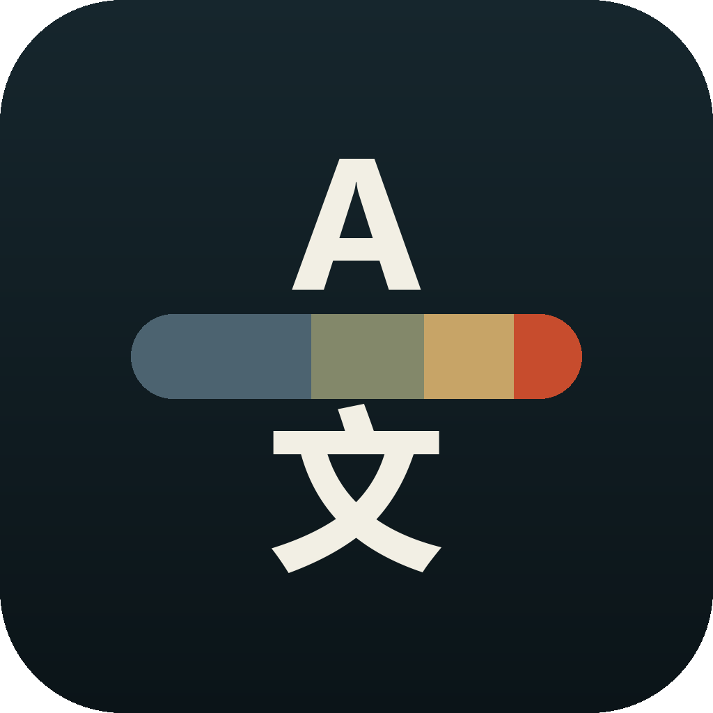

2026-10-15 · 当前目录独立工程。接续前一个 agent 的未提交实现；桌面既有数据标识保持兼容。当前阶段：verified（构建、签名、静态检查）；未进行真机验证。

implementation asset · 图标母版。Android 自适应图标沿用安全区前景与纯色背景。
| 项目 | 实现 | 验证 |
|---|---|---|
| 名称与图标 | tauri.conf.json、icons/android | verified：母版与 Android 自适应前景、圆形资源已查看；APK 名称 tranSSlater，已确认自适应与圆形图标资源。 |
| Android 构建 | scripts/android.ps1、tools.example.json | verified：Release APK 12,685,216 字节；v2/v3 签名、ZIP 完整性、16 KB 原生段与 APK 对齐均 passed。已修复宿主环境、原生 CLI 依赖、符号链接复制兜底和 Gradle 代理。 |
| 移动界面 | src/mobile.css、src/main.ts、index.html | verified：Edge Chromium 触屏模拟 48 项 passed；320px、390px、横屏、平板和双主题截图已查看，窄屏音标与导出换行已修正 |
| 完整历史 | src-tauri/src/history.rs，SQLite WAL、完整 JSON、分页浏览 | verified：Rust 44 项单元测试 passed；1,205 条记录关闭重开后完整保留；分页、完整 JSON 与全量导出检查 passed |
安装 APK · SHA256 与静态审计 · Android 7.0+，arm64-v8a，包名 com.transslater.app，版本 0.1.0。
前端生产构建 passed；Rust 44 项 passed，8 项联网冒烟按默认配置 ignored；桌面 EXE 9 项真实回归 passed。arm64 ELF 所有 LOAD 段 0x4000（16 KB）对齐已确认。ADB 设备列表为空：Android 实际启动、系统文档选择器、软键盘与安全区为 manual check remaining。
implementation capture · Edge Chromium 触屏模拟，使用测试数据和模拟 IPC，不是真机截图。
简约皮肤 · 320px 远点皮肤 · 历史与文档导出
已处理 PowerShell 脚本解析失败、CLI 原生模块缺失、宿主 MSVC 环境未初始化、Windows 符号链接权限和 Gradle 未使用系统代理导致 TLS 等待。APK 签名密码文件重复读取的问题已修复，最终签名验证 passed。图标为自行设计，无第三方素材。